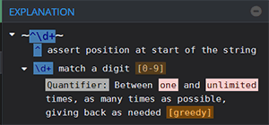
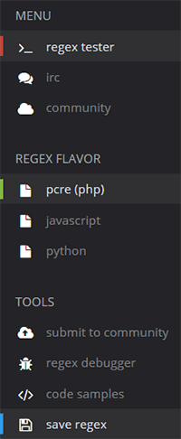
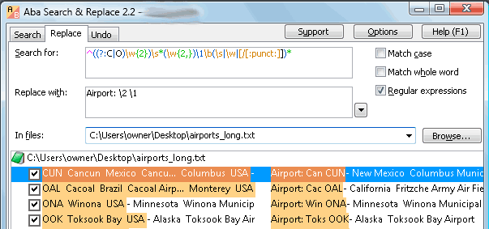
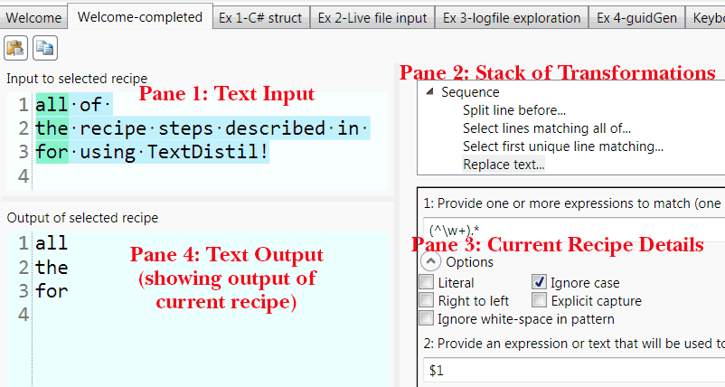

Regex Tools
By "regex tools", I mean tools that either help you build your regular expressions, or where regex is at the core of the tool's function. In the page on regex uses, we saw other tools that happen to use regular expressions—but those are not the focus of this page.
We'll be looking at three excellent tools. A few jump points:
✽ RegexBuddy
✽ Regex101
✽ ABA Search and Replace
✽ TextDistill
✽ Other tools
RegexBuddy: the Rolls-Royce of regex tools
RegexBuddy is my absolute favorite regex tool. I can't do serious regular expressions work without it.This page used to have a short intro to the tool. Since then, I wrote the huge RegexBuddy tutorial I always dreamed of (the most comprehensive RegexBuddy tut I'm aware of), which now lives on my dedicated RegexBuddy tutorial page.
Don't have time to read it? Download a free RegexBuddy trial.
Regex101
 Although RegexBuddy is my regex building tool of choice, some people do not want to invest in a standalone tool, do not run Windows, or prefer the community features of online tools. As of April 2014, my favorite online regex tool by far is regex101.The coding world is awash with online regex testers. New tools come out all the time, and old favorites often fail to keep up with the release of their supported engines' new versions.
Recently, I have been impressed with regex101.
Don't get me wrong. The features cannot possibly rival with RegexBuddy's depth. But regex101 is clean, it's easy to use, it has community features that RegexBuddy lacks, and, for many people, it may be the only regex tester they need. Here are the main features:
 ✽ Support for multiple flavors. Regex101 supports PCRE, Javascript and Python.
✽ Regex tester with syntax highlighting. The match panel does a great job of colorizing the regex syntax. It shows you capture groups, allows substitutions and provides a detailed explanation of each token.
✽ Debugger. If your regex matches, the debugger panel shows you the steps taken by the engine.
✽ Code Samples. The tool supplies you with samples to use your expression in the flavors supported.
✽ Saving a regex to a short link. When you click the "save regex" button, you are supplied with a short link such as http://regex101.com/r/tP9zZ6 (try it!) This makes it easy to share expressions on forums.
✽ Chat. There is a chat room via an integrated irc web client (qwebirc).
✽ Expressions submitted by users. When you click the "community" button, you see a list of expressions submitted by users, ranked by number of votes.
ABA Search and Replace
In late 2011, I fell in love with a compact tool called ABA Search and Replace. Searching for text (and replacing it) across multiple text files is not a new idea: grep was born in 1973. The best grep version for Windows (as far as I know) is actually available on this site, on the next page. What's new is that Peter Kankowski, ABA's talented programmer, has nailed the interface. This program is a joy to work with. In fact, it is so good that I find myself inventing tasks just so I have the chance to use it.First, let's briefly review the alternatives. Directory Opus, the stellar file manager for those who use a computer more than once a week, lets you build amazingly intricate searches (with or without regex) that can look at a file's contents, size, metadata and other attributes—but the interface does not respond like ABA's. Jan Goyvaerts has several tools with grep-like functionality, among which the expensive PowerGrep, whose interface I have not managed to understand. The grep-style features in Jan's RegexBuddy and EditPad Pro also leave me cold. The PCRE Grep command-line tool on the next page is light-weight and delightful, but it does not replace.
Now a quick orientation to the ABA interface. At the top, three tabs: Search, Replace, Undo. (It's very cool that you can undo major replacements across many files. ABA does that by backing up your files. You specify the size of the file cache—only 20MB by default.)

At the top of the picture, you can see the Search box, where you type or paste your regex. Then the Replace box, where you enter your replacement expression. Next, in the file box, you enter the name of the file you want to search, or a wildcard, such as *.txt. Finally, in the bottom pane, you see the matches and replacements.
Now here's what I love about ABA:
✽ As you tweak your expression, the matches in the bottom panel change on the fly! So do the replacements. That is truly magical.
✽ The check boxes let you deselect instances you don't want to replace.
✽ You can copy all the lines that contain matches—or just the matching text. That's amazingly convenient when you are trying to trim down a huge file to a dozen lines of interesting data.
✽ the program supports variable-width lookbehinds (often helpful!)
And basically, it just works. The other search-and-replace tools have an interface I don't find intuitive.
Peter wrote his own regex engine so that ABA would support various encodings aside from ascii and utf-8—for instance, UTF-16 LE.
If you want to support good programming and treat yourself to a very cool powertool that is bound to save you hours of work sooner and later, I highly encourage you to spend the thirty bucks for a license, which at the moment includes free lifetime upgrades.
TextDistill
The regex-oriented tool that most impressed me recently is TextDistill. This (currently) free program firmly sits in a fascinating niche that seems largely ignored by software developers: text processing. Sure, you can search-and-replace in your text editor, or perform a number of advanced actions in a professional publishing package such as Indesign. But there is so much more you can do to a body of text.TextDistill fills the need to apply a stack of regex-directed actions to an input text. Pushing your original raw text (and its consecutive transformations) through that stack, you may end up at the other end with an unrecognizable polished jewel. This metamorphosis is the fruit of distilling the text through the various filters (called recipes), hence the product's name: TextDistill.
The main window lets you create tabs, one for each text-processing project. When you first install TextDistill, several sample tabs are open: by exploring each of them, you can learn a lot about how the program works.

In each tab, there are four panes: the input text; the stack of recipes to apply to the text; details for the currently selected recipe; and the output text.
For your stack of transformations, you can pick and choose from a number of pre-programmed recipes. Sure, you can apply a simple regex find-and-replace, and this will probably be your staple transformation. But there are a host of other transformations to pick from. For instance:
✽ Remove lines containing any of…
✽ Skip a number of lines
✽ Select first unique line matching…
✽ and many others.
The only other product I'm aware of in this space is Text Pipe, which is offered at the kind of price where you start to think "Thanks but I'll just write a quick script"—in one word, obscene.
TextDistill uses .NET regular expressions, one of the most powerful regex engines available (together with PCRE, Perl and Mathew Barnett's regex module for Python). If you ever need to transform text in non-obvious ways, I highly recommend it.
Other Regex Tools
Here are some regex creation tools I've tried or heard about.(direct link)
Software by Jan Goyvaerts: official website, free trials
As you already know, I'm a big fan of the software by Jan Goyvaerts, the author of RegexBuddy. His product revolve around his outstanding regex engine. Here's a list of his products and free trials.
✽ RegexBuddy: the most powerful regex tool on Earth. A free RegexBuddy trial is available.
✽ EditPad Pro: the most regex-aware text editor. A free EditPad Pro trial is available.
✽ PowerGREP: perhaps the most powerful text search and manipulation tool. A free PowerGREP trial is available.
✽ RegexMagic: build regex without knowing regex. A free RegexMagic trial is available.
✽ AceText: your text needs from a central location. A free AceText trial is available.
✽ HelpScribble: create documentation files and website. A free HelpScribble trial is available.
✽ DeployMaster: no-nonsense installation builder. A free DeployMaster trial is available.
(direct link)
Online Tools
✽ I'm quite fond of RegexPlanet because it supports an astounding array of flavors: Go, Haskell, Java, Javascript, .NET, Perl, PHP, Python, Ruby, tcl, XRegExp.
✽ Debuggex is an interesting tool because it generates visualizations of your expressions. You can then share the links, as you'll see if you click the image.
I'm not what one might call a "visual person", but it seems to me that the Debuggex visualizations could be a powerful way of walking such a person through a regular expression.
✽ For JavaScript coders, RxInput is a very interesting component that validates as you type, completing the field when no other matching paths are left.
✽ For Ruby, Rubular is also well-liked.
✽ I used to like Lars Olav's tester for its three flavors, but it seems to have fallen a bit behind.
Stand-Alone Regex Testers
For desktop-side testing, I'll be perfectly frank: I don't see any tool can improving on my RegexBuddy experience, so I haven't tested the tools below properly.
But not everyone wants to pay for a regex tool. There are several free alternatives. I haven't tried any of them because I love RegexBuddy and I'm lazy. Here are links to tools I've heard of:
• Expresso
• The Regulator
• Rad Software Regular Expression Designer
grep with pcregrep, debug and optimize with pcretest

Leave a Comment
another tool you may want to list is ReX-T (https://apps.apple.com/de/app/rex-t/id1120211452). We just published version 4 and think it would complete your list (disclaimer: I'm one of the developers. )
As an author of regex related material, I thought you might be interested in a new tool I have created. Textpression is a Windows application that allows users to avoid regex syntax and work visually with regex. Appreciate you probably get thousands of these requests, but any feedback would be welcome; especially via the Facebook page. Please also feel free to discuss Textpression with anyone and everyone you think might be interested. Many thanks for your time. David Howes (Textpression Software's Creator)
www. Textpression. Com
www. Facebook. Com/Textpression
Worth looking at, especially while learning